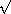
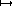
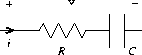
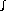
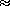
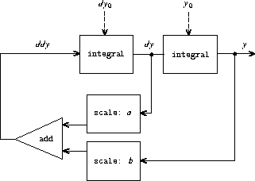
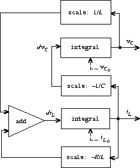

|
We've gained a good understanding of assignment as a tool in modeling, as well as an appreciation of the complex problems that assignment raises. It is time to ask whether we could have gone about things in a different way, so as to avoid some of these problems. In this section, we explore an alternative approach to modeling state, based on data structures called streams. As we shall see, streams can mitigate some of the complexity of modeling state.
Let's step back and review where this complexity comes from. In an attempt to model real-world phenomena, we made some apparently reasonable decisions: We modeled real-world objects with local state by computational objects with local variables. We identified time variation in the real world with time variation in the computer. We implemented the time variation of the states of the model objects in the computer with assignments to the local variables of the model objects.
Is there another approach? Can we avoid identifying time in the computer with time in the modeled world? Must we make the model change with time in order to model phenomena in a changing world? Think about the issue in terms of mathematical functions. We can describe the time-varying behavior of a quantity x as a function of time x(t). If we concentrate on x instant by instant, we think of it as a changing quantity. Yet if we concentrate on the entire time history of values, we do not emphasize change -- the function itself does not change.52
If time is measured in discrete steps, then we can model a time function as a (possibly infinite) sequence. In this section, we will see how to model change in terms of sequences that represent the time histories of the systems being modeled. To accomplish this, we introduce new data structures called streams. From an abstract point of view, a stream is simply a sequence. However, we will find that the straightforward implementation of streams as lists (as in section 2.2.1) doesn't fully reveal the power of stream processing. As an alternative, we introduce the technique of delayed evaluation, which enables us to represent very large (even infinite) sequences as streams.
Stream processing lets us model systems that have state without ever using assignment or mutable data. This has important implications, both theoretical and practical, because we can build models that avoid the drawbacks inherent in introducing assignment. On the other hand, the stream framework raises difficulties of its own, and the question of which modeling technique leads to more modular and more easily maintained systems remains open.
As we saw in section 2.2.3, sequences can serve as standard interfaces for combining program modules. We formulated powerful abstractions for manipulating sequences, such as map, filter, and accumulate, that capture a wide variety of operations in a manner that is both succinct and elegant.
Unfortunately, if we represent sequences as lists, this elegance is bought at the price of severe inefficiency with respect to both the time and space required by our computations. When we represent manipulations on sequences as transformations of lists, our programs must construct and copy data structures (which may be huge) at every step of a process.
To see why this is true, let us compare two programs for computing the sum of all the prime numbers in an interval. The first program is written in standard iterative style:53
(define (sum-primes a b)
(define (iter count accum)
(cond ((> count b) accum)
((prime? count) (iter (+ count 1) (+ count accum)))
(else (iter (+ count 1) accum))))
(iter a 0))
The second program performs the same computation using the sequence operations of section 2.2.3:
(define (sum-primes a b)
(accumulate +
0
(filter prime? (enumerate-interval a b))))
In carrying out the computation, the first program needs to store only the sum being accumulated. In contrast, the filter in the second program cannot do any testing until enumerate-interval has constructed a complete list of the numbers in the interval. The filter generates another list, which in turn is passed to accumulate before being collapsed to form a sum. Such large intermediate storage is not needed by the first program, which we can think of as enumerating the interval incrementally, adding each prime to the sum as it is generated.
The inefficiency in using lists becomes painfully apparent if we use the sequence paradigm to compute the second prime in the interval from 10,000 to 1,000,000 by evaluating the expression
(car (cdr (filter prime?
(enumerate-interval 10000 1000000))))
This expression does find the second prime, but the computational overhead is outrageous. We construct a list of almost a million integers, filter this list by testing each element for primality, and then ignore almost all of the result. In a more traditional programming style, we would interleave the enumeration and the filtering, and stop when we reached the second prime.
Streams are a clever idea that allows one to use sequence manipulations without incurring the costs of manipulating sequences as lists. With streams we can achieve the best of both worlds: We can formulate programs elegantly as sequence manipulations, while attaining the efficiency of incremental computation. The basic idea is to arrange to construct a stream only partially, and to pass the partial construction to the program that consumes the stream. If the consumer attempts to access a part of the stream that has not yet been constructed, the stream will automatically construct just enough more of itself to produce the required part, thus preserving the illusion that the entire stream exists. In other words, although we will write programs as if we were processing complete sequences, we design our stream implementation to automatically and transparently interleave the construction of the stream with its use.
On the surface, streams are just lists with different names for the procedures that manipulate them. There is a constructor, cons-stream, and two selectors, stream-car and stream-cdr, which satisfy the constraints
There is a distinguishable object, the-empty-stream, which cannot be the result of any cons-stream operation, and which can be identified with the predicate stream-null?.54 Thus we can make and use streams, in just the same way as we can make and use lists, to represent aggregate data arranged in a sequence. In particular, we can build stream analogs of the list operations from chapter 2, such as list-ref, map, and for-each:55
(define (stream-ref s n)
(if (= n 0)
(stream-car s)
(stream-ref (stream-cdr s) (- n 1))))
(define (stream-map proc s)
(if (stream-null? s)
the-empty-stream
(cons-stream (proc (stream-car s))
(stream-map proc (stream-cdr s)))))
(define (stream-for-each proc s)
(if (stream-null? s)
'done
(begin (proc (stream-car s))
(stream-for-each proc (stream-cdr s)))))
Stream-for-each is useful for viewing streams:
(define (display-stream s)
(stream-for-each display-line s))
(define (display-line x)
(newline)
(display x))
To make the stream implementation automatically and transparently interleave the construction of a stream with its use, we will arrange for the cdr of a stream to be evaluated when it is accessed by the stream-cdr procedure rather than when the stream is constructed by cons-stream. This implementation choice is reminiscent of our discussion of rational numbers in section 2.1.2, where we saw that we can choose to implement rational numbers so that the reduction of numerator and denominator to lowest terms is performed either at construction time or at selection time. The two rational-number implementations produce the same data abstraction, but the choice has an effect on efficiency. There is a similar relationship between streams and ordinary lists. As a data abstraction, streams are the same as lists. The difference is the time at which the elements are evaluated. With ordinary lists, both the car and the cdr are evaluated at construction time. With streams, the cdr is evaluated at selection time.
Our implementation of streams will be based on a special form called delay. Evaluating (delay <exp>) does not evaluate the expression <exp>, but rather returns a so-called delayed object, which we can think of as a ``promise'' to evaluate <exp> at some future time. As a companion to delay, there is a procedure called force that takes a delayed object as argument and performs the evaluation -- in effect, forcing the delay to fulfill its promise. We will see below how delay and force can be implemented, but first let us use these to construct streams.
Cons-stream is a special form defined so that
(cons-stream <a> <b>)
is equivalent to
(cons <a> (delay <b>))
What this means is that we will construct streams using pairs. However, rather than placing the value of the rest of the stream into the cdr of the pair we will put there a promise to compute the rest if it is ever requested. Stream-car and stream-cdr can now be defined as procedures:
(define (stream-car stream) (car stream))
(define (stream-cdr stream) (force (cdr stream)))
Stream-car selects the car of the pair; stream-cdr selects the cdr of the pair and evaluates the delayed expression found there to obtain the rest of the stream.56
To see how this implementation behaves, let us analyze the ``outrageous'' prime computation we saw above, reformulated in terms of streams:
(stream-car
(stream-cdr
(stream-filter prime?
(stream-enumerate-interval 10000 1000000))))
We will see that it does indeed work efficiently.
We begin by calling stream-enumerate-interval with the arguments 10,000 and 1,000,000. Stream-enumerate-interval is the stream analog of enumerate-interval (section 2.2.3):
(define (stream-enumerate-interval low high)
(if (> low high)
the-empty-stream
(cons-stream
low
(stream-enumerate-interval (+ low 1) high))))
and thus the result returned by stream-enumerate-interval, formed by the cons-stream, is57
(cons 10000
(delay (stream-enumerate-interval 10001 1000000)))
That is, stream-enumerate-interval returns a stream represented as a pair whose car is 10,000 and whose cdr is a promise to enumerate more of the interval if so requested. This stream is now filtered for primes, using the stream analog of the filter procedure (section 2.2.3):
(define (stream-filter pred stream)
(cond ((stream-null? stream) the-empty-stream)
((pred (stream-car stream))
(cons-stream (stream-car stream)
(stream-filter pred
(stream-cdr stream))))
(else (stream-filter pred (stream-cdr stream)))))
Stream-filter tests the stream-car of the stream (the car of the pair, which is 10,000). Since this is not prime, stream-filter examines the stream-cdr of its input stream. The call to stream-cdr forces evaluation of the delayed stream-enumerate-interval, which now returns
(cons 10001
(delay (stream-enumerate-interval 10002 1000000)))
Stream-filter now looks at the stream-car of this stream, 10,001, sees that this is not prime either, forces another stream-cdr, and so on, until stream-enumerate-interval yields the prime 10,007, whereupon stream-filter, according to its definition, returns
(cons-stream (stream-car stream)
(stream-filter pred (stream-cdr stream)))
which in this case is
(cons 10007
(delay
(stream-filter
prime?
(cons 10008
(delay
(stream-enumerate-interval 10009
1000000))))))
This result is now passed to stream-cdr in our original expression. This forces the delayed stream-filter, which in turn keeps forcing the delayed stream-enumerate-interval until it finds the next prime, which is 10,009. Finally, the result passed to stream-car in our original expression is
(cons 10009
(delay
(stream-filter
prime?
(cons 10010
(delay
(stream-enumerate-interval 10011
1000000))))))
Stream-car returns 10,009, and the computation is complete. Only as many integers were tested for primality as were necessary to find the second prime, and the interval was enumerated only as far as was necessary to feed the prime filter.
In general, we can think of delayed evaluation as ``demand-driven'' programming, whereby each stage in the stream process is activated only enough to satisfy the next stage. What we have done is to decouple the actual order of events in the computation from the apparent structure of our procedures. We write procedures as if the streams existed ``all at once'' when, in reality, the computation is performed incrementally, as in traditional programming styles.
Although delay and force may seem like mysterious operations, their implementation is really quite straightforward. Delay must package an expression so that it can be evaluated later on demand, and we can accomplish this simply by treating the expression as the body of a procedure. Delay can be a special form such that
(delay <exp>)
is syntactic sugar for
(lambda () <exp>)
Force simply calls the procedure (of no arguments) produced by delay, so we can implement force as a procedure:
(define (force delayed-object)
(delayed-object))
This implementation suffices for delay and force to work as advertised, but there is an important optimization that we can include. In many applications, we end up forcing the same delayed object many times. This can lead to serious inefficiency in recursive programs involving streams. (See exercise 3.57.) The solution is to build delayed objects so that the first time they are forced, they store the value that is computed. Subsequent forcings will simply return the stored value without repeating the computation. In other words, we implement delay as a special-purpose memoized procedure similar to the one described in exercise 3.27. One way to accomplish this is to use the following procedure, which takes as argument a procedure (of no arguments) and returns a memoized version of the procedure. The first time the memoized procedure is run, it saves the computed result. On subsequent evaluations, it simply returns the result.
(define (memo-proc proc)
(let ((already-run? false) (result false))
(lambda ()
(if (not already-run?)
(begin (set! result (proc))
(set! already-run? true)
result)
result))))
Delay is then defined so that (delay <exp>) is equivalent to
(memo-proc (lambda () <exp>))
and force is as defined previously.58
Exercise 3.50. Complete the following definition, which generalizes stream-map to allow procedures that take multiple arguments, analogous to map in section 2.2.3, footnote 12.
(define (stream-map proc . argstreams)
(if (<??> (car argstreams))
the-empty-stream
(<??>
(apply proc (map <??> argstreams))
(apply stream-map
(cons proc (map <??> argstreams))))))
Exercise 3.51. In order to take a closer look at delayed evaluation, we will use the following procedure, which simply returns its argument after printing it:
(define (show x)
(display-line x)
x)
What does the interpreter print in response to evaluating each expression in the following sequence?59
(define x (stream-map show (stream-enumerate-interval 0 10)))
(stream-ref x 5)
(stream-ref x 7)
Exercise 3.52. Consider the sequence of expressions
(define sum 0)
(define (accum x)
(set! sum (+ x sum))
sum)
(define seq (stream-map accum (stream-enumerate-interval 1 20)))
(define y (stream-filter even? seq))
(define z (stream-filter (lambda (x) (= (remainder x 5) 0))
seq))
(stream-ref y 7)
(display-stream z)
What is the value of sum after each of the above expressions is evaluated? What is the printed response to evaluating the stream-ref and display-stream expressions? Would these responses differ if we had implemented (delay <exp>) simply as (lambda () <exp>) without using the optimization provided by memo-proc ? Explain.
We have seen how to support the illusion of manipulating streams as complete entities even though, in actuality, we compute only as much of the stream as we need to access. We can exploit this technique to represent sequences efficiently as streams, even if the sequences are very long. What is more striking, we can use streams to represent sequences that are infinitely long. For instance, consider the following definition of the stream of positive integers:
(define (integers-starting-from n)
(cons-stream n (integers-starting-from (+ n 1))))
(define integers (integers-starting-from 1))
This makes sense because integers will be a pair whose car is 1 and whose cdr is a promise to produce the integers beginning with 2. This is an infinitely long stream, but in any given time we can examine only a finite portion of it. Thus, our programs will never know that the entire infinite stream is not there.
Using integers we can define other infinite streams, such as the stream of integers that are not divisible by 7:
(define (divisible? x y) (= (remainder x y) 0))
(define no-sevens
(stream-filter (lambda (x) (not (divisible? x 7)))
integers))
Then we can find integers not divisible by 7 simply by accessing elements of this stream:
(stream-ref no-sevens 100)
117
In analogy with integers, we can define the infinite stream of Fibonacci numbers:
(define (fibgen a b)
(cons-stream a (fibgen b (+ a b))))
(define fibs (fibgen 0 1))
Fibs is a pair whose car is 0 and whose cdr is a promise to evaluate (fibgen 1 1). When we evaluate this delayed (fibgen 1 1), it will produce a pair whose car is 1 and whose cdr is a promise to evaluate (fibgen 1 2), and so on.
For a look at a more exciting infinite stream, we can generalize the no-sevens example to construct the infinite stream of prime numbers, using a method known as the sieve of Eratosthenes.60 We start with the integers beginning with 2, which is the first prime. To get the rest of the primes, we start by filtering the multiples of 2 from the rest of the integers. This leaves a stream beginning with 3, which is the next prime. Now we filter the multiples of 3 from the rest of this stream. This leaves a stream beginning with 5, which is the next prime, and so on. In other words, we construct the primes by a sieving process, described as follows: To sieve a stream S, form a stream whose first element is the first element of S and the rest of which is obtained by filtering all multiples of the first element of S out of the rest of S and sieving the result. This process is readily described in terms of stream operations:
(define (sieve stream)
(cons-stream
(stream-car stream)
(sieve (stream-filter
(lambda (x)
(not (divisible? x (stream-car stream))))
(stream-cdr stream)))))
(define primes (sieve (integers-starting-from 2)))
Now to find a particular prime we need only ask for it:
(stream-ref primes 50)
233
It is interesting to contemplate the signal-processing system set up by sieve, shown in the ``Henderson diagram'' in figure 3.31.61 The input stream feeds into an ``unconser'' that separates the first element of the stream from the rest of the stream. The first element is used to construct a divisibility filter, through which the rest is passed, and the output of the filter is fed to another sieve box. Then the original first element is consed onto the output of the internal sieve to form the output stream. Thus, not only is the stream infinite, but the signal processor is also infinite, because the sieve contains a sieve within it.
|
|
The integers and fibs streams above were defined by specifying ``generating'' procedures that explicitly compute the stream elements one by one. An alternative way to specify streams is to take advantage of delayed evaluation to define streams implicitly. For example, the following expression defines the stream ones to be an infinite stream of ones:
(define ones (cons-stream 1 ones))
This works much like the definition of a recursive procedure: ones is a pair whose car is 1 and whose cdr is a promise to evaluate ones. Evaluating the cdr gives us again a 1 and a promise to evaluate ones, and so on.
We can do more interesting things by manipulating streams with operations such as add-streams, which produces the elementwise sum of two given streams:62
(define (add-streams s1 s2)
(stream-map + s1 s2))
Now we can define the integers as follows:
(define integers (cons-stream 1 (add-streams ones integers)))
This defines integers to be a stream whose first element is 1 and the rest of which is the sum of ones and integers. Thus, the second element of integers is 1 plus the first element of integers, or 2; the third element of integers is 1 plus the second element of integers, or 3; and so on. This definition works because, at any point, enough of the integers stream has been generated so that we can feed it back into the definition to produce the next integer.
We can define the Fibonacci numbers in the same style:
(define fibs
(cons-stream 0
(cons-stream 1
(add-streams (stream-cdr fibs)
fibs))))
This definition says that fibs is a stream beginning with 0 and 1, such that the rest of the stream can be generated by adding fibs to itself shifted by one place:
| 1 | 1 | 2 | 3 | 5 | 8 | 13 | 21 | ... = (stream-cdr fibs) | ||
| 0 | 1 | 1 | 2 | 3 | 5 | 8 | 13 | ... = fibs | ||
| 0 | 1 | 1 | 2 | 3 | 5 | 8 | 13 | 21 | 34 | ... = fibs |
Scale-stream is another useful procedure in formulating such stream definitions. This multiplies each item in a stream by a given constant:
(define (scale-stream stream factor)
(stream-map (lambda (x) (* x factor)) stream))
For example,
(define double (cons-stream 1 (scale-stream double 2)))
produces the stream of powers of 2: 1, 2, 4, 8, 16, 32, ....
An alternate definition of the stream of primes can be given by starting with the integers and filtering them by testing for primality. We will need the first prime, 2, to get started:
(define primes
(cons-stream
2
(stream-filter prime? (integers-starting-from 3))))
This definition is not so straightforward as it appears, because we will test whether a number n is prime by checking whether n is divisible by a prime (not by just any integer) less than or equal to n:
(define (prime? n)
(define (iter ps)
(cond ((> (square (stream-car ps)) n) true)
((divisible? n (stream-car ps)) false)
(else (iter (stream-cdr ps)))))
(iter primes))
This is a recursive definition, since primes is defined in terms of the prime? predicate, which itself uses the primes stream. The reason this procedure works is that, at any point, enough of the primes stream has been generated to test the primality of the numbers we need to check next. That is, for every n we test for primality, either n is not prime (in which case there is a prime already generated that divides it) or n is prime (in which case there is a prime already generated -- i.e., a prime less than n -- that is greater than n).63
Exercise 3.53. Without running the program, describe the elements of the stream defined by
(define s (cons-stream 1 (add-streams s s)))
Exercise 3.54. Define a procedure mul-streams, analogous to add-streams, that produces the elementwise product of its two input streams. Use this together with the stream of integers to complete the following definition of the stream whose nth element (counting from 0) is n + 1 factorial:
(define factorials (cons-stream 1 (mul-streams <??> <??>)))
Exercise 3.55. Define a procedure partial-sums that takes as argument a stream S and returns the stream whose elements are S0, S0 + S1, S0 + S1 + S2, .... For example, (partial-sums integers) should be the stream 1, 3, 6, 10, 15, ....
Exercise 3.56. A famous problem, first raised by R. Hamming, is to enumerate, in ascending order with no repetitions, all positive integers with no prime factors other than 2, 3, or 5. One obvious way to do this is to simply test each integer in turn to see whether it has any factors other than 2, 3, and 5. But this is very inefficient, since, as the integers get larger, fewer and fewer of them fit the requirement. As an alternative, let us call the required stream of numbers S and notice the following facts about it.
Now all we have to do is combine elements from these sources. For this we define a procedure merge that combines two ordered streams into one ordered result stream, eliminating repetitions:
(define (merge s1 s2)
(cond ((stream-null? s1) s2)
((stream-null? s2) s1)
(else
(let ((s1car (stream-car s1))
(s2car (stream-car s2)))
(cond ((< s1car s2car)
(cons-stream s1car (merge (stream-cdr s1) s2)))
((> s1car s2car)
(cons-stream s2car (merge s1 (stream-cdr s2))))
(else
(cons-stream s1car
(merge (stream-cdr s1)
(stream-cdr s2)))))))))
Then the required stream may be constructed with merge, as follows:
(define S (cons-stream 1 (merge <??> <??>)))
Fill in the missing expressions in the places marked <??> above.
Exercise 3.57. How many additions are performed when we compute the nth Fibonacci number using the definition of fibs based on the add-streams procedure? Show that the number of additions would be exponentially greater if we had implemented (delay <exp>) simply as (lambda () <exp>), without using the optimization provided by the memo-proc procedure described in section 3.5.1.64
Exercise 3.58. Give an interpretation of the stream computed by the following procedure:
(define (expand num den radix)
(cons-stream
(quotient (* num radix) den)
(expand (remainder (* num radix) den) den radix)))
(Quotient is a primitive that returns the integer quotient of two integers.) What are the successive elements produced by (expand 1 7 10) ? What is produced by (expand 3 8 10) ?
Exercise 3.59. In section 2.5.3 we saw how to implement a polynomial arithmetic system representing polynomials as lists of terms. In a similar way, we can work with power series, such as


represented as infinite streams. We will represent the series a0 + a1 x + a2 x2 + a3 x3 + ··· as the stream whose elements are the coefficients a0, a1, a2, a3, ....
a. The integral of the series a0 + a1 x + a2 x2 + a3 x3 + ··· is the series

where c is any constant. Define a procedure integrate-series that takes as input a stream a0, a1, a2, ... representing a power series and returns the stream a0, (1/2)a1, (1/3)a2, ... of coefficients of the non-constant terms of the integral of the series. (Since the result has no constant term, it doesn't represent a power series; when we use integrate-series, we will cons on the appropriate constant.)
b. The function x  ex is its own derivative. This implies that ex and the integral of ex are the same series, except for the constant term, which is e0 = 1. Accordingly, we can generate the series for ex as
(define exp-series
(cons-stream 1 (integrate-series exp-series)))
Show how to generate the series for sine and cosine, starting from the facts that the derivative of sine is cosine and the derivative of cosine is the negative of sine:
(define cosine-series
(cons-stream 1 <??>))
(define sine-series
(cons-stream 0 <??>))
Exercise 3.60. With power series represented as streams of coefficients as in exercise 3.59, adding series is implemented by add-streams. Complete the definition of the following procedure for multiplying series:
(define (mul-series s1 s2)
(cons-stream <??> (add-streams <??> <??>)))
You can test your procedure by verifying that sin2 x + cos2 x = 1, using the series from exercise 3.59.
Exercise 3.61. Let S be a power series (exercise 3.59) whose constant term is 1. Suppose we want to find the power series 1/S, that is, the series X such that S · X = 1. Write S = 1 + SR where SR is the part of S after the constant term. Then we can solve for X as follows:

In other words, X is the power series whose constant term is 1 and whose higher-order terms are given by the negative of SR times X. Use this idea to write a procedure invert-unit-series that computes 1/S for a power series S with constant term 1. You will need to use mul-series from exercise 3.60.
Exercise 3.62. Use the results of exercises 3.60 and 3.61 to define a procedure div-series that divides two power series. Div-series should work for any two series, provided that the denominator series begins with a nonzero constant term. (If the denominator has a zero constant term, then div-series should signal an error.) Show how to use div-series together with the result of exercise 3.59 to generate the power series for tangent.
Streams with delayed evaluation can be a powerful modeling tool, providing many of the benefits of local state and assignment. Moreover, they avoid some of the theoretical tangles that accompany the introduction of assignment into a programming language.
The stream approach can be illuminating because it allows us to build systems with different module boundaries than systems organized around assignment to state variables. For example, we can think of an entire time series (or signal) as a focus of interest, rather than the values of the state variables at individual moments. This makes it convenient to combine and compare components of state from different moments.
In section 1.2.1, we introduced iterative processes, which proceed by updating state variables. We know now that we can represent state as a ``timeless'' stream of values rather than as a set of variables to be updated. Let's adopt this perspective in revisiting the square-root procedure from section 1.1.7. Recall that the idea is to generate a sequence of better and better guesses for the square root of x by applying over and over again the procedure that improves guesses:
(define (sqrt-improve guess x)
(average guess (/ x guess)))
In our original sqrt procedure, we made these guesses be the successive values of a state variable. Instead we can generate the infinite stream of guesses, starting with an initial guess of 1:65
(define (sqrt-stream x)
(define guesses
(cons-stream 1.0
(stream-map (lambda (guess)
(sqrt-improve guess x))
guesses)))
guesses)
(display-stream (sqrt-stream 2))
1.
1.5
1.4166666666666665
1.4142156862745097
1.4142135623746899
...
We can generate more and more terms of the stream to get better and better guesses. If we like, we can write a procedure that keeps generating terms until the answer is good enough. (See exercise 3.64.)
Another iteration that we can treat in the same way is to generate an
approximation to  , based upon the alternating series that we saw
in section 1.3.1:
, based upon the alternating series that we saw
in section 1.3.1:

We first generate the stream of summands of the series (the reciprocals of the odd integers, with alternating signs). Then we take the stream of sums of more and more terms (using the partial-sums procedure of exercise 3.55) and scale the result by 4:
(define (pi-summands n)
(cons-stream (/ 1.0 n)
(stream-map - (pi-summands (+ n 2)))))
(define pi-stream
(scale-stream (partial-sums (pi-summands 1)) 4))
(display-stream pi-stream)
4.
2.666666666666667
3.466666666666667
2.8952380952380956
3.3396825396825403
2.9760461760461765
3.2837384837384844
3.017071817071818
...
This gives us a stream of better and better approximations to ,
although the approximations converge rather slowly. Eight terms of
the sequence bound the value of between 3.284 and 3.017.
So far, our use of the stream of states approach is not much different from updating state variables. But streams give us an opportunity to do some interesting tricks. For example, we can transform a stream with a sequence accelerator that converts a sequence of approximations to a new sequence that converges to the same value as the original, only faster.
One such accelerator, due to the eighteenth-century Swiss mathematician Leonhard Euler, works well with sequences that are partial sums of alternating series (series of terms with alternating signs). In Euler's technique, if Sn is the nth term of the original sum sequence, then the accelerated sequence has terms

Thus, if the original sequence is represented as a stream of values, the transformed sequence is given by
(define (euler-transform s)
(let ((s0 (stream-ref s 0)) ; Sn-1
(s1 (stream-ref s 1)) ; Sn
(s2 (stream-ref s 2))) ; Sn+1
(cons-stream (- s2 (/ (square (- s2 s1))
(+ s0 (* -2 s1) s2)))
(euler-transform (stream-cdr s)))))
We can demonstrate Euler acceleration with our sequence of
approximations to :
(display-stream (euler-transform pi-stream))
3.166666666666667
3.1333333333333337
3.1452380952380956
3.13968253968254
3.1427128427128435
3.1408813408813416
3.142071817071818
3.1412548236077655
...
Even better, we can accelerate the accelerated sequence, and recursively accelerate that, and so on. Namely, we create a stream of streams (a structure we'll call a tableau) in which each stream is the transform of the preceding one:
(define (make-tableau transform s)
(cons-stream s
(make-tableau transform
(transform s))))
The tableau has the form

Finally, we form a sequence by taking the first term in each row of the tableau:
(define (accelerated-sequence transform s)
(stream-map stream-car
(make-tableau transform s)))
We can demonstrate this kind of ``super-acceleration'' of the
sequence:
(display-stream (accelerated-sequence euler-transform
pi-stream))
4.
3.166666666666667
3.142105263157895
3.141599357319005
3.1415927140337785
3.1415926539752927
3.1415926535911765
3.141592653589778
...
The result is impressive. Taking eight terms of the sequence yields
the correct value of to 14 decimal places. If we had used only
the original sequence, we would need to compute on the order of
1013 terms (i.e., expanding the series far enough so that the
individual terms are less then 10-13) to get that much accuracy!
We could have implemented these acceleration techniques without
using streams. But the stream formulation is particularly elegant and
convenient because the entire sequence of states is available to us as a
data structure that can be manipulated with a uniform set of
operations.
Exercise 3.63. Louis Reasoner asks why the sqrt-stream procedure was not written in the following more straightforward way, without the local variable guesses:
(define (sqrt-stream x)
(cons-stream 1.0
(stream-map (lambda (guess)
(sqrt-improve guess x))
(sqrt-stream x))))
Alyssa P. Hacker replies that this version of the procedure is considerably less efficient because it performs redundant computation. Explain Alyssa's answer. Would the two versions still differ in efficiency if our implementation of delay used only (lambda () <exp>) without using the optimization provided by memo-proc (section 3.5.1)?
Exercise 3.64. Write a procedure stream-limit that takes as arguments a stream and a number (the tolerance). It should examine the stream until it finds two successive elements that differ in absolute value by less than the tolerance, and return the second of the two elements. Using this, we could compute square roots up to a given tolerance by
(define (sqrt x tolerance)
(stream-limit (sqrt-stream x) tolerance))

to compute three sequences of approximations to the natural logarithm of 2,
in the same way we did above for .
How rapidly do these sequences converge?
In section 2.2.3, we saw how the sequence paradigm handles traditional nested loops as processes defined on sequences of pairs. If we generalize this technique to infinite streams, then we can write programs that are not easily represented as loops, because the ``looping'' must range over an infinite set.
For example, suppose we want to generalize the prime-sum-pairs procedure of section 2.2.3 to produce the stream of pairs of all integers (i,j) with i < j such that i + j is prime. If int-pairs is the sequence of all pairs of integers (i,j) with i < j, then our required stream is simply66
(stream-filter (lambda (pair)
(prime? (+ (car pair) (cadr pair))))
int-pairs)
Our problem, then, is to produce the stream int-pairs. More generally, suppose we have two streams S = (Si) and T = (Tj), and imagine the infinite rectangular array

We wish to generate a stream that contains all the pairs in the array that lie on or above the diagonal, i.e., the pairs

(If we take both S and T to be the stream of integers, then this will be our desired stream int-pairs.)
Call the general stream of pairs (pairs S T), and consider it to be composed of three parts: the pair (S0,T0), the rest of the pairs in the first row, and the remaining pairs:67

Observe that the third piece in this decomposition (pairs that are not in the first row) is (recursively) the pairs formed from (stream-cdr S) and (stream-cdr T). Also note that the second piece (the rest of the first row) is
(stream-map (lambda (x) (list (stream-car s) x))
(stream-cdr t))
Thus we can form our stream of pairs as follows:
(define (pairs s t)
(cons-stream
(list (stream-car s) (stream-car t))
(<combine-in-some-way>
(stream-map (lambda (x) (list (stream-car s) x))
(stream-cdr t))
(pairs (stream-cdr s) (stream-cdr t)))))
In order to complete the procedure, we must choose some way to combine the two inner streams. One idea is to use the stream analog of the append procedure from section 2.2.1:
(define (stream-append s1 s2)
(if (stream-null? s1)
s2
(cons-stream (stream-car s1)
(stream-append (stream-cdr s1) s2))))
This is unsuitable for infinite streams, however, because it takes all the elements from the first stream before incorporating the second stream. In particular, if we try to generate all pairs of positive integers using
(pairs integers integers)
our stream of results will first try to run through all pairs with the first integer equal to 1, and hence will never produce pairs with any other value of the first integer.
To handle infinite streams, we need to devise an order of combination that ensures that every element will eventually be reached if we let our program run long enough. An elegant way to accomplish this is with the following interleave procedure:68
(define (interleave s1 s2)
(if (stream-null? s1)
s2
(cons-stream (stream-car s1)
(interleave s2 (stream-cdr s1)))))
Since interleave takes elements alternately from the two streams, every element of the second stream will eventually find its way into the interleaved stream, even if the first stream is infinite.
We can thus generate the required stream of pairs as
(define (pairs s t)
(cons-stream
(list (stream-car s) (stream-car t))
(interleave
(stream-map (lambda (x) (list (stream-car s) x))
(stream-cdr t))
(pairs (stream-cdr s) (stream-cdr t)))))
Exercise 3.66. Examine the stream (pairs integers integers). Can you make any general comments about the order in which the pairs are placed into the stream? For example, about how many pairs precede the pair (1,100)? the pair (99,100)? the pair (100,100)? (If you can make precise mathematical statements here, all the better. But feel free to give more qualitative answers if you find yourself getting bogged down.)
Exercise 3.67. Modify the pairs procedure so that (pairs integers integers) will produce the stream of all pairs of integers (i,j) (without the condition i < j). Hint: You will need to mix in an additional stream.
Exercise 3.68. Louis Reasoner thinks that building a stream of pairs from three parts is unnecessarily complicated. Instead of separating the pair (S0,T0) from the rest of the pairs in the first row, he proposes to work with the whole first row, as follows:
(define (pairs s t)
(interleave
(stream-map (lambda (x) (list (stream-car s) x))
t)
(pairs (stream-cdr s) (stream-cdr t))))
Does this work? Consider what happens if we evaluate (pairs integers integers) using Louis's definition of pairs.
Exercise 3.69. Write a procedure triples that takes three infinite streams, S, T, and U, and produces the stream of triples (Si,Tj,Uk) such that i < j < k. Use triples to generate the stream of all Pythagorean triples of positive integers, i.e., the triples (i,j,k) such that i < j and i2 + j2 = k2.
Exercise 3.70. It would be nice to be able to generate streams in which the pairs appear in some useful order, rather than in the order that results from an ad hoc interleaving process. We can use a technique similar to the merge procedure of exercise 3.56, if we define a way to say that one pair of integers is ``less than'' another. One way to do this is to define a ``weighting function'' W(i,j) and stipulate that (i1,j1) is less than (i2,j2) if W(i1,j1) < W(i2,j2). Write a procedure merge-weighted that is like merge, except that merge-weighted takes an additional argument weight, which is a procedure that computes the weight of a pair, and is used to determine the order in which elements should appear in the resulting merged stream.69 Using this, generalize pairs to a procedure weighted-pairs that takes two streams, together with a procedure that computes a weighting function, and generates the stream of pairs, ordered according to weight. Use your procedure to generate
a. the stream of all pairs of positive integers (i,j) with i < j ordered according to the sum i + j
b. the stream of all pairs of positive integers (i,j) with i < j, where neither i nor j is divisible by 2, 3, or 5, and the pairs are ordered according to the sum 2 i + 3 j + 5 i j.
Exercise 3.71. Numbers that can be expressed as the sum of two cubes in more than one way are sometimes called Ramanujan numbers, in honor of the mathematician Srinivasa Ramanujan.70 Ordered streams of pairs provide an elegant solution to the problem of computing these numbers. To find a number that can be written as the sum of two cubes in two different ways, we need only generate the stream of pairs of integers (i,j) weighted according to the sum i3 + j3 (see exercise 3.70), then search the stream for two consecutive pairs with the same weight. Write a procedure to generate the Ramanujan numbers. The first such number is 1,729. What are the next five?
Exercise 3.72. In a similar way to exercise 3.71 generate a stream of all numbers that can be written as the sum of two squares in three different ways (showing how they can be so written).
We began our discussion of streams by describing them as computational analogs of the ``signals'' in signal-processing systems. In fact, we can use streams to model signal-processing systems in a very direct way, representing the values of a signal at successive time intervals as consecutive elements of a stream. For instance, we can implement an integrator or summer that, for an input stream x = (xi), an initial value C, and a small increment dt, accumulates the sum

and returns the stream of values S = (Si). The following integral procedure is reminiscent of the ``implicit style'' definition of the stream of integers (section 3.5.2):
(define (integral integrand initial-value dt)
(define int
(cons-stream initial-value
(add-streams (scale-stream integrand dt)
int)))
int)

|
Figure 3.32 is a picture of a signal-processing system that corresponds to the integral procedure. The input stream is scaled by dt and passed through an adder, whose output is passed back through the same adder. The self-reference in the definition of int is reflected in the figure by the feedback loop that connects the output of the adder to one of the inputs.

v = v0 + (1/C)0ti dt + R i
|
We can model electrical circuits using streams to represent the values of currents or voltages at a sequence of times. For instance, suppose we have an RC circuit consisting of a resistor of resistance R and a capacitor of capacitance C in series. The voltage response v of the circuit to an injected current i is determined by the formula in figure 3.33, whose structure is shown by the accompanying signal-flow diagram.
Write a procedure RC that models this circuit. RC should take as inputs the values of R, C, and dt and should return a procedure that takes as inputs a stream representing the current i and an initial value for the capacitor voltage v0 and produces as output the stream of voltages v. For example, you should be able to use RC to model an RC circuit with R = 5 ohms, C = 1 farad, and a 0.5-second time step by evaluating (define RC1 (RC 5 1 0.5)). This defines RC1 as a procedure that takes a stream representing the time sequence of currents and an initial capacitor voltage and produces the output stream of voltages.
Exercise 3.74. Alyssa P. Hacker is designing a system to process signals coming from physical sensors. One important feature she wishes to produce is a signal that describes the zero crossings of the input signal. That is, the resulting signal should be + 1 whenever the input signal changes from negative to positive, - 1 whenever the input signal changes from positive to negative, and 0 otherwise. (Assume that the sign of a 0 input is positive.) For example, a typical input signal with its associated zero-crossing signal would be
...1 2 1.5 1 0.5 -0.1 -2 -3 -2 -0.5 0.2 3 4 ...... 0 0 0 0 0 -1 0 0 0 0 1 0 0 ...
In Alyssa's system, the signal from the sensor is represented as a stream sense-data and the stream zero-crossings is the corresponding stream of zero crossings. Alyssa first writes a procedure sign-change-detector that takes two values as arguments and compares the signs of the values to produce an appropriate 0, 1, or - 1. She then constructs her zero-crossing stream as follows:
(define (make-zero-crossings input-stream last-value)
(cons-stream
(sign-change-detector (stream-car input-stream) last-value)
(make-zero-crossings (stream-cdr input-stream)
(stream-car input-stream))))
(define zero-crossings (make-zero-crossings sense-data 0))
Alyssa's boss, Eva Lu Ator, walks by and suggests that this program is approximately equivalent to the following one, which uses the generalized version of stream-map from exercise 3.50:
(define zero-crossings
(stream-map sign-change-detector sense-data <expression>))
Complete the program by supplying the indicated <expression>.
Exercise 3.75. Unfortunately, Alyssa's zero-crossing detector in exercise 3.74 proves to be insufficient, because the noisy signal from the sensor leads to spurious zero crossings. Lem E. Tweakit, a hardware specialist, suggests that Alyssa smooth the signal to filter out the noise before extracting the zero crossings. Alyssa takes his advice and decides to extract the zero crossings from the signal constructed by averaging each value of the sense data with the previous value. She explains the problem to her assistant, Louis Reasoner, who attempts to implement the idea, altering Alyssa's program as follows:
(define (make-zero-crossings input-stream last-value)
(let ((avpt (/ (+ (stream-car input-stream) last-value) 2)))
(cons-stream (sign-change-detector avpt last-value)
(make-zero-crossings (stream-cdr input-stream)
avpt))))
This does not correctly implement Alyssa's plan. Find the bug that Louis has installed and fix it without changing the structure of the program. (Hint: You will need to increase the number of arguments to make-zero-crossings.)
Exercise 3.76. Eva Lu Ator has a criticism of Louis's approach in exercise 3.75. The program he wrote is not modular, because it intermixes the operation of smoothing with the zero-crossing extraction. For example, the extractor should not have to be changed if Alyssa finds a better way to condition her input signal. Help Louis by writing a procedure smooth that takes a stream as input and produces a stream in which each element is the average of two successive input stream elements. Then use smooth as a component to implement the zero-crossing detector in a more modular style.
The integral procedure at the end of the preceding section shows how we can use streams to model signal-processing systems that contain feedback loops. The feedback loop for the adder shown in figure 3.32 is modeled by the fact that integral's internal stream int is defined in terms of itself:
(define int
(cons-stream initial-value
(add-streams (scale-stream integrand dt)
int)))
The interpreter's ability to deal with such an implicit definition depends on the delay that is incorporated into cons-stream. Without this delay, the interpreter could not construct int before evaluating both arguments to cons-stream, which would require that int already be defined. In general, delay is crucial for using streams to model signal-processing systems that contain loops. Without delay, our models would have to be formulated so that the inputs to any signal-processing component would be fully evaluated before the output could be produced. This would outlaw loops.
Unfortunately, stream models of systems with loops may require uses of delay beyond the ``hidden'' delay supplied by cons-stream. For instance, figure 3.34 shows a signal-processing system for solving the differential equation dy/dt = f(y) where f is a given function. The figure shows a mapping component, which applies f to its input signal, linked in a feedback loop to an integrator in a manner very similar to that of the analog computer circuits that are actually used to solve such equations.
Assuming we are given an initial value y0 for y, we could try to model this system using the procedure
(define (solve f y0 dt)
(define y (integral dy y0 dt))
(define dy (stream-map f y))
y)
This procedure does not work, because in the first line of solve the call to integral requires that the input dy be defined, which does not happen until the second line of solve.
On the other hand, the intent of our definition does make sense, because we can, in principle, begin to generate the y stream without knowing dy. Indeed, integral and many other stream operations have properties similar to those of cons-stream, in that we can generate part of the answer given only partial information about the arguments. For integral, the first element of the output stream is the specified initial-value. Thus, we can generate the first element of the output stream without evaluating the integrand dy. Once we know the first element of y, the stream-map in the second line of solve can begin working to generate the first element of dy, which will produce the next element of y, and so on.
To take advantage of this idea, we will redefine integral to expect the integrand stream to be a delayed argument. Integral will force the integrand to be evaluated only when it is required to generate more than the first element of the output stream:
(define (integral delayed-integrand initial-value dt)
(define int
(cons-stream initial-value
(let ((integrand (force delayed-integrand)))
(add-streams (scale-stream integrand dt)
int))))
int)
Now we can implement our solve procedure by delaying the evaluation of dy in the definition of y:71
(define (solve f y0 dt)
(define y (integral (delay dy) y0 dt))
(define dy (stream-map f y))
y)
In general, every caller of integral must now delay the integrand argument. We can demonstrate that the solve procedure works by approximating e  2.718 by computing the value at y = 1 of the solution to the differential equation dy/dt = y with initial condition y(0) = 1:
(stream-ref (solve (lambda (y) y) 1 0.001) 1000)
2.716924
Exercise 3.77. The integral procedure used above was analogous to the ``implicit'' definition of the infinite stream of integers in section 3.5.2. Alternatively, we can give a definition of integral that is more like integers-starting-from (also in section 3.5.2):
(define (integral integrand initial-value dt)
(cons-stream initial-value
(if (stream-null? integrand)
the-empty-stream
(integral (stream-cdr integrand)
(+ (* dt (stream-car integrand))
initial-value)
dt))))
When used in systems with loops, this procedure has the same problem as does our original version of integral. Modify the procedure so that it expects the integrand as a delayed argument and hence can be used in the solve procedure shown above.
|  |
Consider the problem of designing a signal-processing system to study the homogeneous second-order linear differential equation
The output stream, modeling y, is generated by a network that contains a loop. This is because the value of d2y/dt2 depends upon the values of y and dy/dt and both of these are determined by integrating d2y/dt2. The diagram we would like to encode is shown in figure 3.35. Write a procedure solve-2nd that takes as arguments the constants a, b, and dt and the initial values y0 and dy0 for y and dy/dt and generates the stream of successive values of y.
Exercise 3.79. Generalize the solve-2nd procedure of exercise 3.78 so that it can be used to solve general second-order differential equations d2 y/dt2 = f(dy/dt, y).
Exercise 3.80. A series RLC circuit consists of a resistor, a capacitor, and an inductor connected in series, as shown in figure 3.36. If R, L, and C are the resistance, inductance, and capacitance, then the relations between voltage (v) and current (i) for the three components are described by the equations

and the circuit connections dictate the relations

Combining these equations shows that the state of the circuit (summarized by vC, the voltage across the capacitor, and iL, the current in the inductor) is described by the pair of differential equations

The signal-flow diagram representing this system of differential equations is shown in figure 3.37.

|
|  |
Write a procedure RLC that takes as arguments the parameters R, L, and C of the circuit and the time increment dt. In a manner similar to that of the RC procedure of exercise 3.73, RLC should produce a procedure that takes the initial values of the state variables, vC0 and iL0, and produces a pair (using cons) of the streams of states vC and iL. Using RLC, generate the pair of streams that models the behavior of a series RLC circuit with R = 1 ohm, C = 0.2 farad, L = 1 henry, dt = 0.1 second, and initial values iL0 = 0 amps and vC0 = 10 volts.
The examples in this section illustrate how the explicit use of delay and force provides great programming flexibility, but the same examples also show how this can make our programs more complex. Our new integral procedure, for instance, gives us the power to model systems with loops, but we must now remember that integral should be called with a delayed integrand, and every procedure that uses integral must be aware of this. In effect, we have created two classes of procedures: ordinary procedures and procedures that take delayed arguments. In general, creating separate classes of procedures forces us to create separate classes of higher-order procedures as well.72
One way to avoid the need for two different classes of procedures is to make all procedures take delayed arguments. We could adopt a model of evaluation in which all arguments to procedures are automatically delayed and arguments are forced only when they are actually needed (for example, when they are required by a primitive operation). This would transform our language to use normal-order evaluation, which we first described when we introduced the substitution model for evaluation in section 1.1.5. Converting to normal-order evaluation provides a uniform and elegant way to simplify the use of delayed evaluation, and this would be a natural strategy to adopt if we were concerned only with stream processing. In section 4.2, after we have studied the evaluator, we will see how to transform our language in just this way. Unfortunately, including delays in procedure calls wreaks havoc with our ability to design programs that depend on the order of events, such as programs that use assignment, mutate data, or perform input or output. Even the single delay in cons-stream can cause great confusion, as illustrated by exercises 3.51 and 3.52. As far as anyone knows, mutability and delayed evaluation do not mix well in programming languages, and devising ways to deal with both of these at once is an active area of research.
As we saw in section 3.1.2, one of the
major benefits of introducing assignment is that we can increase the
modularity of our systems by encapsulating, or ``hiding,'' parts of
the state of a large system within local variables. Stream models can
provide an equivalent modularity without the use of assignment. As an
illustration, we can reimplement the Monte Carlo estimation of ,
which we examined in section 3.1.2, from a
stream-processing point of view.
The key modularity issue was that we wished to hide the internal state of a random-number generator from programs that used random numbers. We began with a procedure rand-update, whose successive values furnished our supply of random numbers, and used this to produce a random-number generator:
(define rand
(let ((x random-init))
(lambda ()
(set! x (rand-update x))
x)))
In the stream formulation there is no random-number generator per se, just a stream of random numbers produced by successive calls to rand-update:
(define random-numbers
(cons-stream random-init
(stream-map rand-update random-numbers)))
We use this to construct the stream of outcomes of the Cesàro experiment performed on consecutive pairs in the random-numbers stream:
(define cesaro-stream
(map-successive-pairs (lambda (r1 r2) (= (gcd r1 r2) 1))
random-numbers))
(define (map-successive-pairs f s)
(cons-stream
(f (stream-car s) (stream-car (stream-cdr s)))
(map-successive-pairs f (stream-cdr (stream-cdr s)))))
The cesaro-stream is now fed to a monte-carlo procedure,
which produces a stream of estimates of probabilities. The results
are then converted into a stream of estimates of . This version
of the program doesn't need a parameter telling how many trials to
perform. Better estimates of (from performing more experiments)
are obtained by looking farther into the pi stream:
(define (monte-carlo experiment-stream passed failed)
(define (next passed failed)
(cons-stream
(/ passed (+ passed failed))
(monte-carlo
(stream-cdr experiment-stream) passed failed)))
(if (stream-car experiment-stream)
(next (+ passed 1) failed)
(next passed (+ failed 1))))
(define pi
(stream-map (lambda (p) (sqrt (/ 6 p)))
(monte-carlo cesaro-stream 0 0)))
There is considerable modularity in this approach, because we still can formulate a general monte-carlo procedure that can deal with arbitrary experiments. Yet there is no assignment or local state.
Exercise 3.81. Exercise 3.6 discussed generalizing the random-number generator to allow one to reset the random-number sequence so as to produce repeatable sequences of ``random'' numbers. Produce a stream formulation of this same generator that operates on an input stream of requests to generate a new random number or to reset the sequence to a specified value and that produces the desired stream of random numbers. Don't use assignment in your solution.
Exercise 3.82. Redo exercise 3.5 on Monte Carlo integration in terms of streams. The stream version of estimate-integral will not have an argument telling how many trials to perform. Instead, it will produce a stream of estimates based on successively more trials.
Let us now return to the issues of objects and state that were raised at the beginning of this chapter and examine them in a new light. We introduced assignment and mutable objects to provide a mechanism for modular construction of programs that model systems with state. We constructed computational objects with local state variables and used assignment to modify these variables. We modeled the temporal behavior of the objects in the world by the temporal behavior of the corresponding computational objects.
Now we have seen that streams provide an alternative way to model objects with local state. We can model a changing quantity, such as the local state of some object, using a stream that represents the time history of successive states. In essence, we represent time explicitly, using streams, so that we decouple time in our simulated world from the sequence of events that take place during evaluation. Indeed, because of the presence of delay there may be little relation between simulated time in the model and the order of events during the evaluation.
In order to contrast these two approaches to modeling, let us reconsider the implementation of a ``withdrawal processor'' that monitors the balance in a bank account. In section 3.1.3 we implemented a simplified version of such a processor:
(define (make-simplified-withdraw balance)
(lambda (amount)
(set! balance (- balance amount))
balance))
Calls to make-simplified-withdraw produce computational objects, each with a local state variable balance that is decremented by successive calls to the object. The object takes an amount as an argument and returns the new balance. We can imagine the user of a bank account typing a sequence of inputs to such an object and observing the sequence of returned values shown on a display screen.
Alternatively, we can model a withdrawal processor as a procedure that takes as input a balance and a stream of amounts to withdraw and produces the stream of successive balances in the account:
(define (stream-withdraw balance amount-stream)
(cons-stream
balance
(stream-withdraw (- balance (stream-car amount-stream))
(stream-cdr amount-stream))))
Stream-withdraw implements a well-defined mathematical function whose output is fully determined by its input. Suppose, however, that the input amount-stream is the stream of successive values typed by the user and that the resulting stream of balances is displayed. Then, from the perspective of the user who is typing values and watching results, the stream process has the same behavior as the object created by make-simplified-withdraw. However, with the stream version, there is no assignment, no local state variable, and consequently none of the theoretical difficulties that we encountered in section 3.1.3. Yet the system has state!
This is really remarkable. Even though stream-withdraw implements a well-defined mathematical function whose behavior does not change, the user's perception here is one of interacting with a system that has a changing state. One way to resolve this paradox is to realize that it is the user's temporal existence that imposes state on the system. If the user could step back from the interaction and think in terms of streams of balances rather than individual transactions, the system would appear stateless.73
From the point of view of one part of a complex process, the other parts appear to change with time. They have hidden time-varying local state. If we wish to write programs that model this kind of natural decomposition in our world (as we see it from our viewpoint as a part of that world) with structures in our computer, we make computational objects that are not functional -- they must change with time. We model state with local state variables, and we model the changes of state with assignments to those variables. By doing this we make the time of execution of a computation model time in the world that we are part of, and thus we get ``objects'' in our computer.
Modeling with objects is powerful and intuitive, largely because this matches the perception of interacting with a world of which we are part. However, as we've seen repeatedly throughout this chapter, these models raise thorny problems of constraining the order of events and of synchronizing multiple processes. The possibility of avoiding these problems has stimulated the development of functional programming languages, which do not include any provision for assignment or mutable data. In such a language, all procedures implement well-defined mathematical functions of their arguments, whose behavior does not change. The functional approach is extremely attractive for dealing with concurrent systems.74
On the other hand, if we look closely, we can see time-related problems creeping into functional models as well. One particularly troublesome area arises when we wish to design interactive systems, especially ones that model interactions between independent entities. For instance, consider once more the implementation a banking system that permits joint bank accounts. In a conventional system using assignment and objects, we would model the fact that Peter and Paul share an account by having both Peter and Paul send their transaction requests to the same bank-account object, as we saw in section 3.1.3. From the stream point of view, where there are no ``objects'' per se, we have already indicated that a bank account can be modeled as a process that operates on a stream of transaction requests to produce a stream of responses. Accordingly, we could model the fact that Peter and Paul have a joint bank account by merging Peter's stream of transaction requests with Paul's stream of requests and feeding the result to the bank-account stream process, as shown in figure 3.38.
The trouble with this formulation is in the notion of merge. It will not do to merge the two streams by simply taking alternately one request from Peter and one request from Paul. Suppose Paul accesses the account only very rarely. We could hardly force Peter to wait for Paul to access the account before he could issue a second transaction. However such a merge is implemented, it must interleave the two transaction streams in some way that is constrained by ``real time'' as perceived by Peter and Paul, in the sense that, if Peter and Paul meet, they can agree that certain transactions were processed before the meeting, and other transactions were processed after the meeting.75 This is precisely the same constraint that we had to deal with in section 3.4.1, where we found the need to introduce explicit synchronization to ensure a ``correct'' order of events in concurrent processing of objects with state. Thus, in an attempt to support the functional style, the need to merge inputs from different agents reintroduces the same problems that the functional style was meant to eliminate.
We began this chapter with the goal of building computational models whose structure matches our perception of the real world we are trying to model. We can model the world as a collection of separate, time-bound, interacting objects with state, or we can model the world as a single, timeless, stateless unity. Each view has powerful advantages, but neither view alone is completely satisfactory. A grand unification has yet to emerge.76
52 Physicists sometimes adopt this view by introducing the ``world lines'' of particles as a device for reasoning about motion. We've also already mentioned (section 2.2.3) that this is the natural way to think about signal-processing systems. We will explore applications of streams to signal processing in section 3.5.3.
53 Assume that we have a predicate prime? (e.g., as in section 1.2.6) that tests for primality.
54 In the MIT implementation, the-empty-stream is the same as the empty list '(), and stream-null? is the same as null?.
55 This should bother you. The fact that we are defining such similar procedures for streams and lists indicates that we are missing some underlying abstraction. Unfortunately, in order to exploit this abstraction, we will need to exert finer control over the process of evaluation than we can at present. We will discuss this point further at the end of section 3.5.4. In section 4.2, we'll develop a framework that unifies lists and streams.
56 Although stream-car and stream-cdr can be defined as procedures, cons-stream must be a special form. If cons-stream were a procedure, then, according to our model of evaluation, evaluating (cons-stream <a> <b>) would automatically cause <b> to be evaluated, which is precisely what we do not want to happen. For the same reason, delay must be a special form, though force can be an ordinary procedure.
57 The numbers shown here do not really appear in the delayed expression. What actually appears is the original expression, in an environment in which the variables are bound to the appropriate numbers. For example, (+ low 1) with low bound to 10,000 actually appears where 10001 is shown.
58 There are many possible implementations of streams other than the one described in this section. Delayed evaluation, which is the key to making streams practical, was inherent in Algol 60's call-by-name parameter-passing method. The use of this mechanism to implement streams was first described by Landin (1965). Delayed evaluation for streams was introduced into Lisp by Friedman and Wise (1976). In their implementation, cons always delays evaluating its arguments, so that lists automatically behave as streams. The memoizing optimization is also known as call-by-need. The Algol community would refer to our original delayed objects as call-by-name thunks and to the optimized versions as call-by-need thunks.
59 Exercises such as 3.51 and 3.52 are valuable for testing our understanding of how delay works. On the other hand, intermixing delayed evaluation with printing -- and, even worse, with assignment -- is extremely confusing, and instructors of courses on computer languages have traditionally tormented their students with examination questions such as the ones in this section. Needless to say, writing programs that depend on such subtleties is odious programming style. Part of the power of stream processing is that it lets us ignore the order in which events actually happen in our programs. Unfortunately, this is precisely what we cannot afford to do in the presence of assignment, which forces us to be concerned with time and change.
60 Eratosthenes, a third-century B.C. Alexandrian Greek philosopher, is famous for giving the first accurate estimate of the circumference of the Earth, which he computed by observing shadows cast at noon on the day of the summer solstice. Eratosthenes's sieve method, although ancient, has formed the basis for special-purpose hardware ``sieves'' that, until recently, were the most powerful tools in existence for locating large primes. Since the 70s, however, these methods have been superseded by outgrowths of the probabilistic techniques discussed in section 1.2.6.
61 We have named these figures after Peter Henderson, who was the first person to show us diagrams of this sort as a way of thinking about stream processing. Each solid line represents a stream of values being transmitted. The dashed line from the car to the cons and the filter indicates that this is a single value rather than a stream.
62 This uses the generalized version of stream-map from exercise 3.50.
63 This last point is very subtle and relies on the fact that pn+1 < pn2. (Here, pk denotes the kth prime.) Estimates such as these are very difficult to establish. The ancient proof by Euclid that there are an infinite number of primes shows that pn+1< p1 p2 ··· pn + 1, and no substantially better result was proved until 1851, when the Russian mathematician P. L. Chebyshev established that pn+1< 2pn for all n. This result, originally conjectured in 1845, is known as Bertrand's hypothesis. A proof can be found in section 22.3 of Hardy and Wright 1960.
64 This exercise shows how call-by-need is closely related to ordinary memoization as described in exercise 3.27. In that exercise, we used assignment to explicitly construct a local table. Our call-by-need stream optimization effectively constructs such a table automatically, storing values in the previously forced parts of the stream.
65 We can't use let to bind the local variable guesses, because the value of guesses depends on guesses itself. Exercise 3.63 addresses why we want a local variable here.
66 As in section 2.2.3, we represent a pair of integers as a list rather than a Lisp pair.
67 See exercise 3.68 for some insight into why we chose this decomposition.
68 The precise statement of the required property on the order of combination is as follows: There should be a function f of two arguments such that the pair corresponding to element i of the first stream and element j of the second stream will appear as element number f(i,j) of the output stream. The trick of using interleave to accomplish this was shown to us by David Turner, who employed it in the language KRC (Turner 1981).
69 We will require that the weighting function be such that the weight of a pair increases as we move out along a row or down along a column of the array of pairs.
70 To quote from G. H. Hardy's obituary of Ramanujan (Hardy 1921): ``It was Mr. Littlewood (I believe) who remarked that `every positive integer was one of his friends.' I remember once going to see him when he was lying ill at Putney. I had ridden in taxi-cab No. 1729, and remarked that the number seemed to me a rather dull one, and that I hoped it was not an unfavorable omen. `No,' he replied, `it is a very interesting number; it is the smallest number expressible as the sum of two cubes in two different ways.' '' The trick of using weighted pairs to generate the Ramanujan numbers was shown to us by Charles Leiserson.
71 This procedure is not guaranteed to work in all Scheme implementations, although for any implementation there is a simple variation that will work. The problem has to do with subtle differences in the ways that Scheme implementations handle internal definitions. (See section 4.1.6.)
72 This is a small reflection, in Lisp, of the difficulties that conventional strongly typed languages such as Pascal have in coping with higher-order procedures. In such languages, the programmer must specify the data types of the arguments and the result of each procedure: number, logical value, sequence, and so on. Consequently, we could not express an abstraction such as ``map a given procedure proc over all the elements in a sequence'' by a single higher-order procedure such as stream-map. Rather, we would need a different mapping procedure for each different combination of argument and result data types that might be specified for a proc. Maintaining a practical notion of ``data type'' in the presence of higher-order procedures raises many difficult issues. One way of dealing with this problem is illustrated by the language ML (Gordon, Milner, and Wadsworth 1979), whose ``polymorphic data types'' include templates for higher-order transformations between data types. Moreover, data types for most procedures in ML are never explicitly declared by the programmer. Instead, ML includes a type-inferencing mechanism that uses information in the environment to deduce the data types for newly defined procedures.
73 Similarly in physics, when we observe a moving particle, we say that the position (state) of the particle is changing. However, from the perspective of the particle's world line in space-time there is no change involved.
74 John Backus, the inventor of Fortran, gave high visibility to functional programming when he was awarded the ACM Turing award in 1978. His acceptance speech (Backus 1978) strongly advocated the functional approach. A good overview of functional programming is given in Henderson 1980 and in Darlington, Henderson, and Turner 1982.
75 Observe that, for any two streams, there is in general more than one acceptable order of interleaving. Thus, technically, ``merge'' is a relation rather than a function -- the answer is not a deterministic function of the inputs. We already mentioned (footnote 39) that nondeterminism is essential when dealing with concurrency. The merge relation illustrates the same essential nondeterminism, from the functional perspective. In section 4.3, we will look at nondeterminism from yet another point of view.
76 The object model approximates the world by dividing it into separate pieces. The functional model does not modularize along object boundaries. The object model is useful when the unshared state of the ``objects'' is much larger than the state that they share. An example of a place where the object viewpoint fails is quantum mechanics, where thinking of things as individual particles leads to paradoxes and confusions. Unifying the object view with the functional view may have little to do with programming, but rather with fundamental epistemological issues.